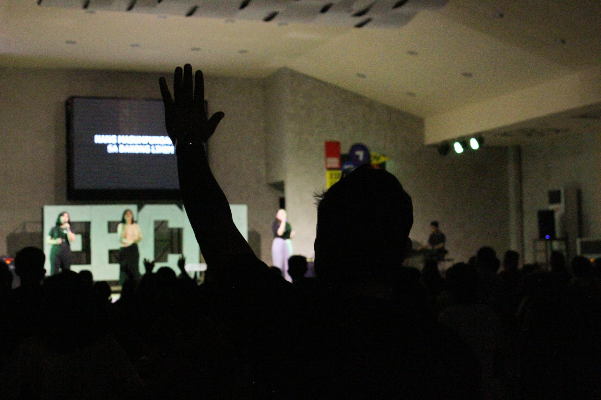
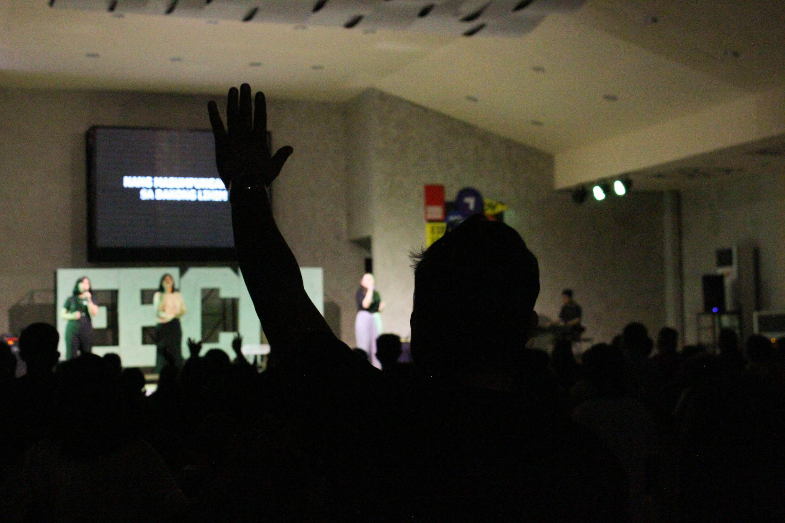
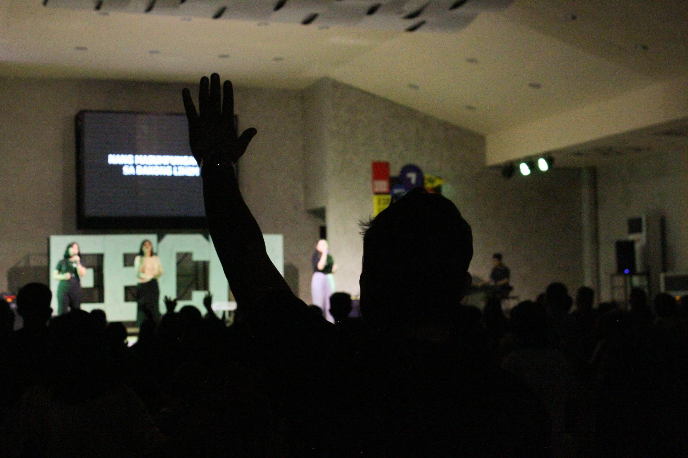
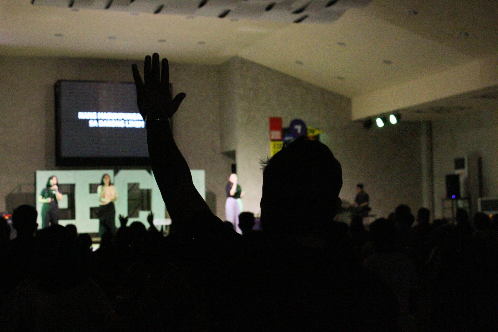

PerFit helps you discover where your strengths, passions, and purpose align-
so you can thrive in the role made just for you.

Answer honestly discover your strengths.

Learn your unique strengths and preferences.

Grow into the person you’re meant to be.

answer the assesment
Carefully go through each question and select you answer.
submit the assessment
Once you're done, Submit your response for processing and evaluation.
see the result
After submission, check your pesonalized result.
Marketplace Ministry
Encourages professionals to integrate their faith into their workplaces, promoting ethical practices and spiritual influence in the marketplace.
Sports Ministry
Uses athletic activities to foster community, promote health, and provide outreach opportunities.
Writing and Publications Ministry
Produces written materials—such as newsletters, devotionals, and educational content—to inform and inspire the church body.
Worship Ministry
Leads the congregation in praising and honoring God through music, song, and other artistic expressions during services.
Prayer Ministry
Focuses on intercessory prayer, organizing prayer meetings, and encouraging a culture of continuous prayer within the church community.
Preaching Ministry
Responsible for delivering sermons and teachings that convey biblical truths and inspire spiritual growth among congregants.
Discipleship Ministry
Aims to mentor and guide individuals in their spiritual journey, fostering maturity and deeper understanding of faith.
Children's Ministry
Provides age-appropriate biblical education and activities for children, laying a foundation for lifelong faith.
Youth Ministry
Engages teenagers through relevant programs, discussions, and events that address their unique challenges and encourage spiritual development.
Young Adults Ministry
Supports individuals in their late teens to early thirties, offering fellowship and guidance as they navigate adulthood and faith.
Men's Ministry
Encourages men to grow spiritually, providing opportunities for fellowship, mentorship, and service.
Women's Ministry
Empowers women through spiritual growth, community building, and service opportunities. Key objectives include fostering spiritual growth, promoting biblical literacy, and encouraging active service.
Family or Couples Ministry
Strengthens marital and family relationships through counseling, workshops, and events that promote healthy dynamics.
Ushering Ministry
Ensures order during services by welcoming attendees, assisting with seating, and facilitating offerings. Ushers play a crucial role in creating a welcoming atmosphere and maintaining order during services.
Hospitality Ministry
Creates a welcoming environment by greeting visitors, providing information, and organizing refreshments or events. provide love, acceptance, comfort, support, care, and unity.
Administrative Ministry
Handles the organizational aspects of church operations, including scheduling, communication, and record-keeping.
Finance Ministry
Manages the church's financial resources, overseeing budgeting, accounting, and stewardship programs.
Security Ministry
Ensures the safety of congregants during church activities, coordinating emergency responses and maintaining a secure environment.
Facilities Maintenance Ministry
Maintains the church's physical infrastructure, ensuring that buildings and equipment are functional and welcoming.
Evangelism Ministry
Focuses on sharing the gospel message with non-believers through various outreach efforts and personal witnessing.
Missions Ministry
Supports local and international mission work, including sending missionaries and providing resources to spread the faith.
Community Service Ministry
Engages in activities that serve the local community, addressing needs such as food distribution, shelter, and education.
Visitation Ministry
Provides support and companionship to those unable to attend church services, including the sick and elderly.
New Believers Ministry
Guides recent converts through foundational teachings and integration into the church community.
Production Tech Ministry
Manages technical aspects of services, including sound, lighting, and audiovisual elements to enhance worship experiences.
Creative Arts Ministry
Utilizes various art forms—such as drama, dance, and visual arts—to convey spiritual messages and enrich worship.
Communications & Social Media Ministry
Handles the church's online presence, disseminating information and engaging with the community through digital platforms.
Graphic and Video Design Ministry
Creates visual content for church materials, including promotional graphics, videos, and presentations.
Counseling Ministry
Offers spiritual and emotional guidance to individuals facing personal challenges, providing support and resources.
Healing & Deliverance Ministry
Focuses on prayer and spiritual practices aimed at healing physical, emotional, and spiritual ailments.
Grief & Bereavement Ministry
Supports individuals coping with loss, offering counseling and group support during times of mourning.
Addiction Recovery Ministry
Provides assistance and programs for individuals seeking freedom from various addictions, promoting healing and restoration.
Special Needs Ministry
Ensures that individuals with disabilities are included and supported within the church community through tailored programs and assistance.
Seniors Ministry
Caters to the spiritual and social needs of older adults, offering fellowship and activities suited to their stage of life.
Single Adults Ministry
Supports unmarried individuals through community building, spiritual growth opportunities, and service projects.
Marketplace Ministry
Encourages professionals to integrate their faith into their workplaces, promoting ethical practices and spiritual influence in the marketplace.
Sports Ministry
Uses athletic activities to foster community, promote health, and provide outreach opportunities.
Writing and Publications Ministry
Produces written materials—such as newsletters, devotionals, and educational content—to inform and inspire the church body.
Worship Ministry
Leads the congregation in praising and honoring God through music, song, and other artistic expressions during services.
Prayer Ministry
Focuses on intercessory prayer, organizing prayer meetings, and encouraging a culture of continuous prayer within the church community.
Preaching Ministry
Responsible for delivering sermons and teachings that convey biblical truths and inspire spiritual growth among congregants.
Discipleship Ministry
Aims to mentor and guide individuals in their spiritual journey, fostering maturity and deeper understanding of faith.